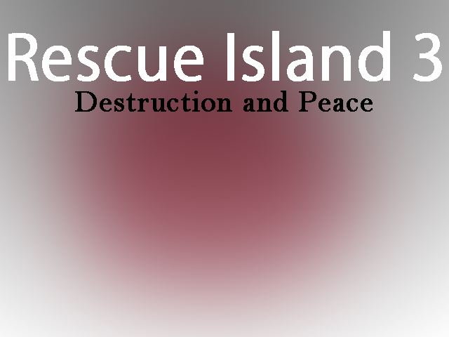

|
 |
|||
作者のコメント去年の紅白No.37およびGW祭No.13「Rescue Island 2」の続編です今作からの追加要素としてクリア済ステージの隠しアイテムの位置が調べられるようになったり、 手に入れた武器の強化も可能になりました アイテムや能力を駆使して、新たな敵に立ち向かえ！！ 現在、次回作「Rescue Island 4」に登場するボスの募集企画を行っております 立ち絵が描ける方なら誰でも歓迎いたしますので、もしよろしければ参加して頂けると幸いです。 参加はDiscordから受け付けています https://discord.gg/Gcc7tBXcr4 -------- 申し訳ございませんが間に合いそうにないので続きは他サイトでの公開となります 完成次第感想掲示板にリンクを貼るのでよろしくお願いいたします 主催のコメント願わくば日本の被災地も救ってほしいものです。ええ。 |
|||
| DL(64.3 MB) | 感想掲示板 | ||